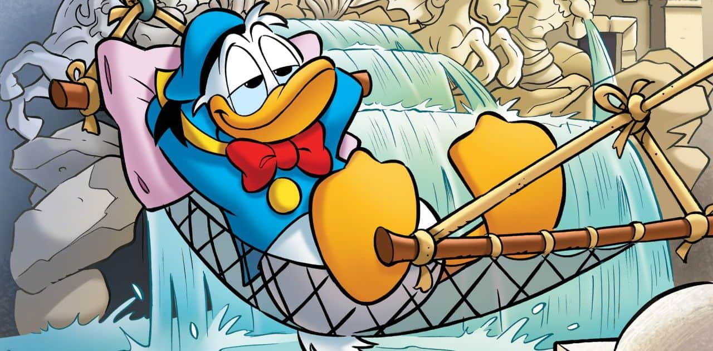

Nel 1934, quattro anni dopo la comparsa di Topolino, nel mondo dei fumetti nacque un personaggio destinato ad un altrettanto fortunatissimo successo: Donald Duck, che in Italia fu ribattezzato con il nome di Paolino Paperino o, più semplicemente, Paperino. Si tratta di un papero ideato da Walt Disney e realizzato graficamente da Ub Iwerks, ma è grazie al bravissimo disegnatore Al Tagliaferro che Paperino acquistò quel segno grafico, buffo e caratteristico, che contribuì a rendere le strip dell'epoca divertentissime ed esilaranti. Paperino veste perennemente con un abito blu alla marinara dai bottoni dorati e un cappellino che ne caratterizza il viso. Abita in una casettina con giardino nella città di Paperopoli e si arrangia a fare mille mestieri: dal pompiere al gelataio, dall'incantatore di serpenti al pescivendolo ecc… Viaggia con una macchina rossa e blu, in stile "Cabriolet" e targata 313, grazie alla quale si avventura in situazioni e storie mozzafiato che entusiasmano e divertono i lettori.
